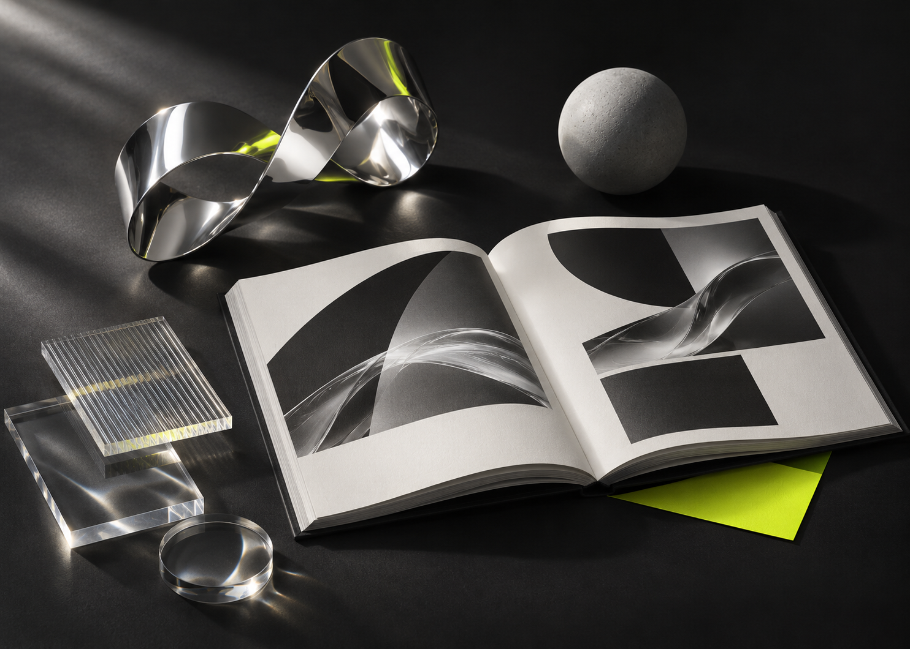

好的体验，
让人从旁观者
变成参与者。
我们喜欢那些让你多停留一秒的瞬间。
从一个想法出发，把视觉的张力、技术的可能，
和人与屏幕之间的微小情绪，放在一起。
精选现场SELECTED WORK
01—0403 / VISUAL JOURNAL
保持好奇，继续滑动。
有想法。
也有方法。
从看见问题，到创造感受。
用清晰的过程，支持大胆的表达。

在材料与屏幕之间，保持实验。01发现与定义DISCOVER & DEFINE
先问一个好问题。理解你希望传递的感受，梳理内容、受众与情境，为创作找到清晰的起点。
02视觉与表达DESIGN & ART DIRECTION
将抽象想法转成看得见的语言。通过字体、色彩、材质与影像，形成有辨识度，也有延展性的视觉系统。
03交互与构建INTERACT & BUILD
让设计回应人的动作。从一次滚动、一处悬停到一次拖动，把视觉转化成可被参与的数字体验。
04打磨与生长REFINE & EVOLVE
在真实使用中观察，再把细节向前推进。关注阅读、操作与设备差异，让表达保持一致，让体验持续生长。
给好奇心，
一点控制权。
拖动雕塑，换一种观察角度。
让同一个想法，拥有不同的表情。
如果让光标，
重新构建这个世界？
把页面交给一群忙碌的光标，看它们从空白开始。
随时按 Esc
返回；声音可在动画中关闭。
IN THE SPACE BETWEEN
游走于边界，
发现新的可能。
“游隙”，是零件之间恰好的空间。
也是我们对创作的理解：
在理性与直觉、秩序与意外之间，
留下一点可以自由探索的余地。
这个数字展厅，用材质、光线与交互，
记录我们对新体验的持续好奇。
GOT A THOUGHT?
让下一个
想法发生。
不必有一份完美的计划。
一个问题、一段灵感，就足够开始。